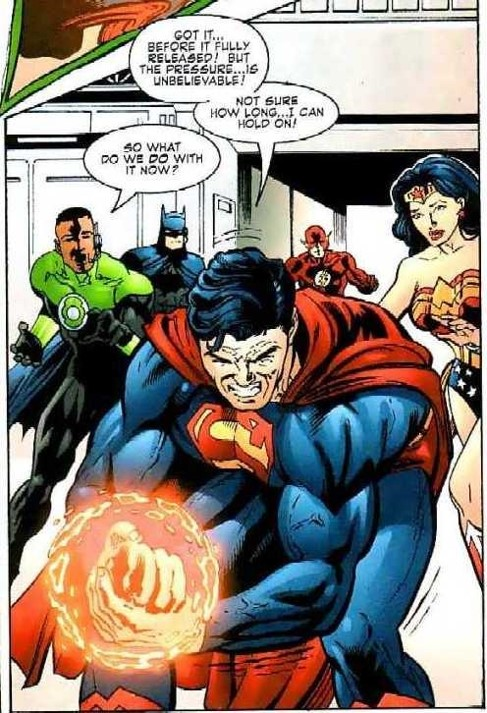
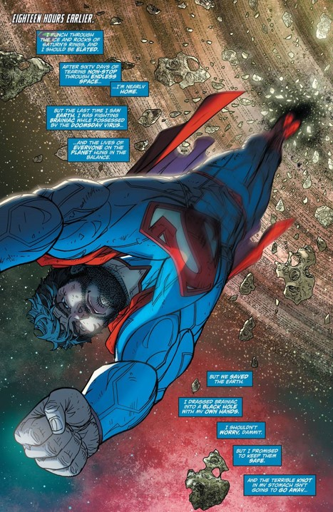

The Black Hole Information Paradox
Holographic Principle
- Captured on the Horizon itself
- 3-D information could be stored in 2-D
- This information is able to be stored in the black hole and maybe in parallel universes.
- We are just holograms?
Soft Hairs
- The hairs are soft photons of light that linger on the event horizon.
- These soft hairs carry a signature of everything in the black hole. This means it can carry the information that the black hole has already sucked in.